Ozair Khan · Cozmo FDE
Call transcript + 40 photos → an Xact estimate.
What breaks first?
WATER LINE · WATER LINE · WATER LINE · WATER LINE · WATER LINE · WATER LINE
01 · Public water-damage photos
Missing information.
0/12photos with a water line the model could measure. It returned no number rather than guess.
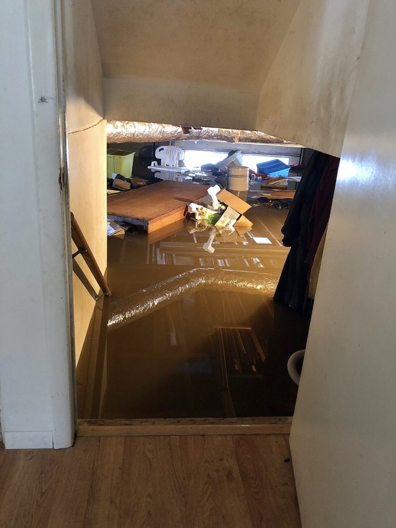
water line: none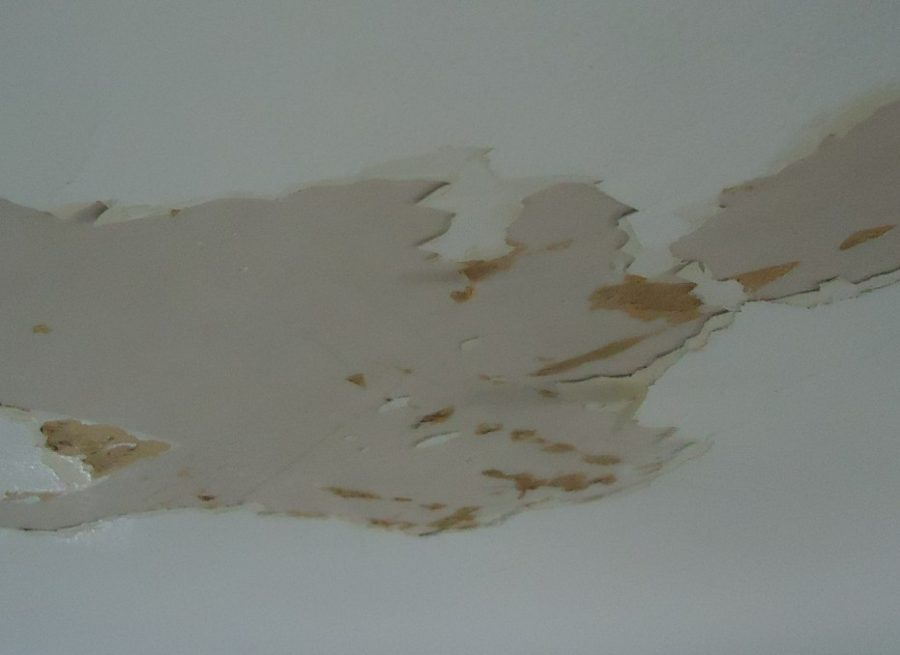
water line: none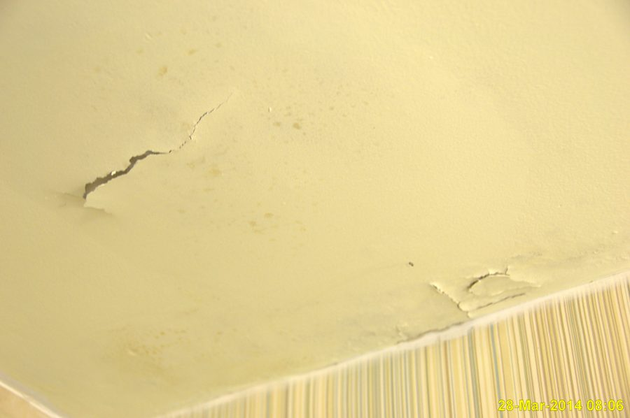
water line: none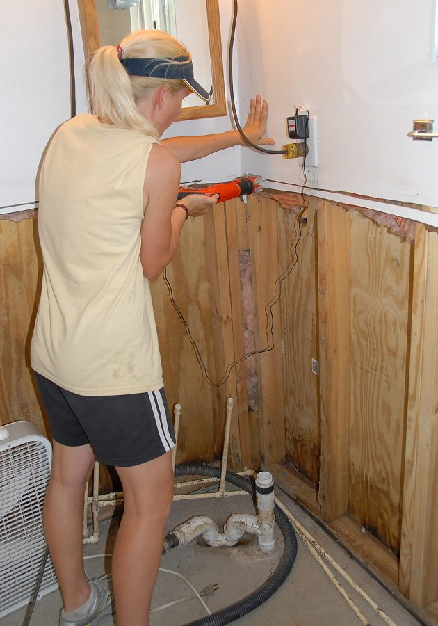
water line: none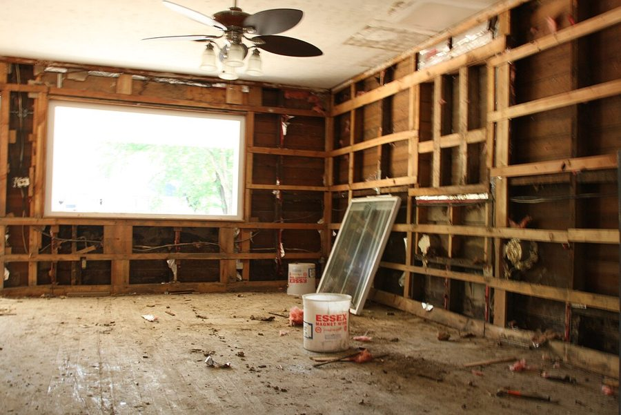
water line: none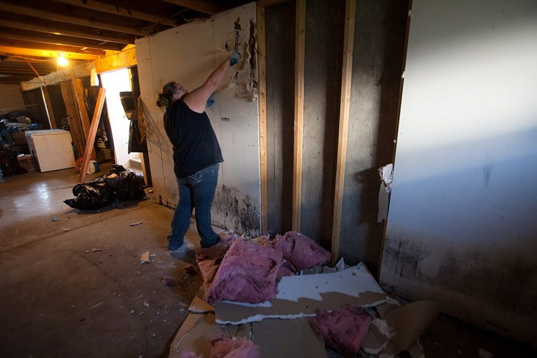
water line: none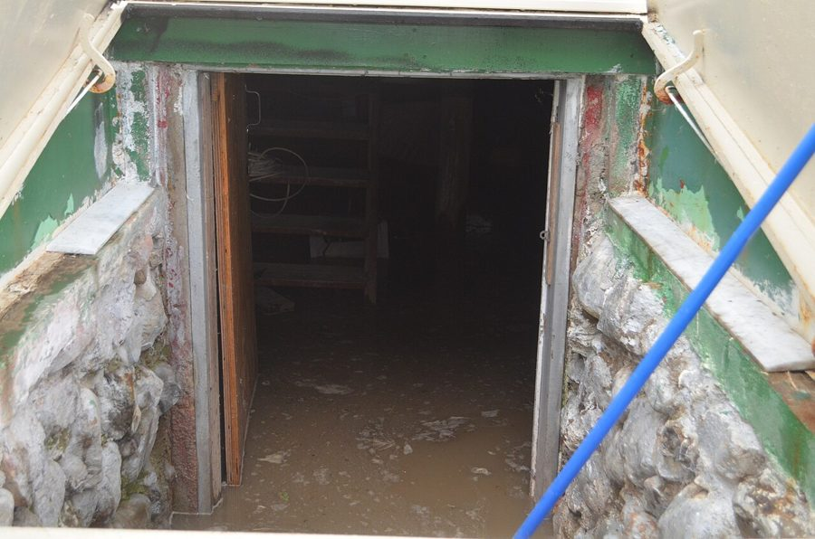
water line: none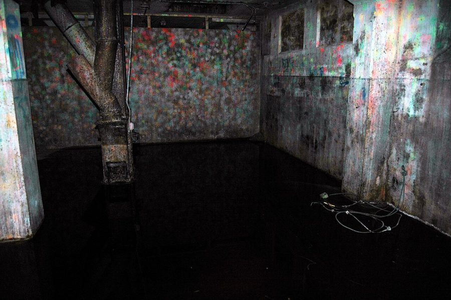
water line: none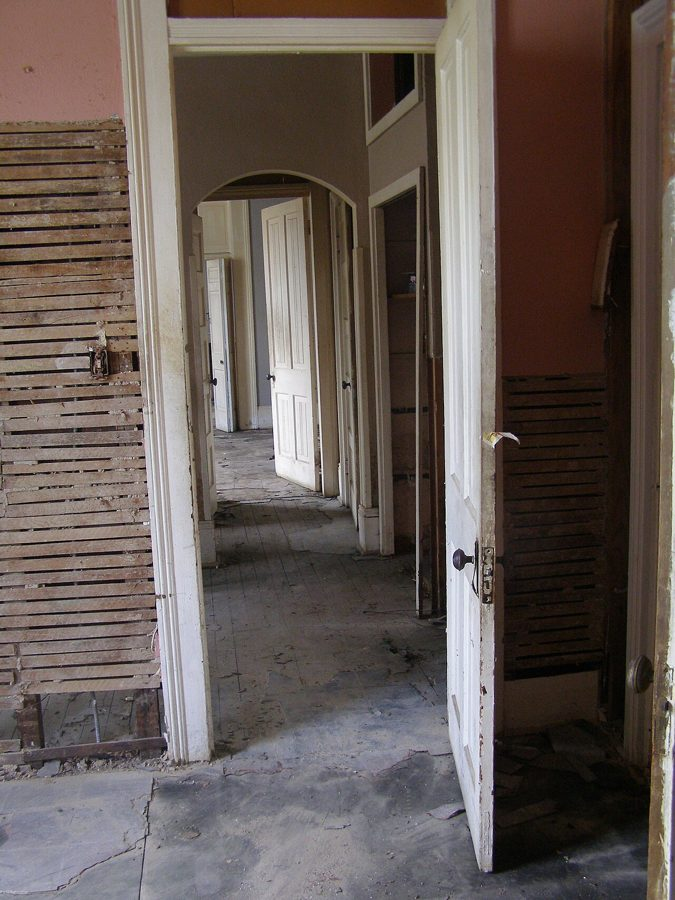
water line: none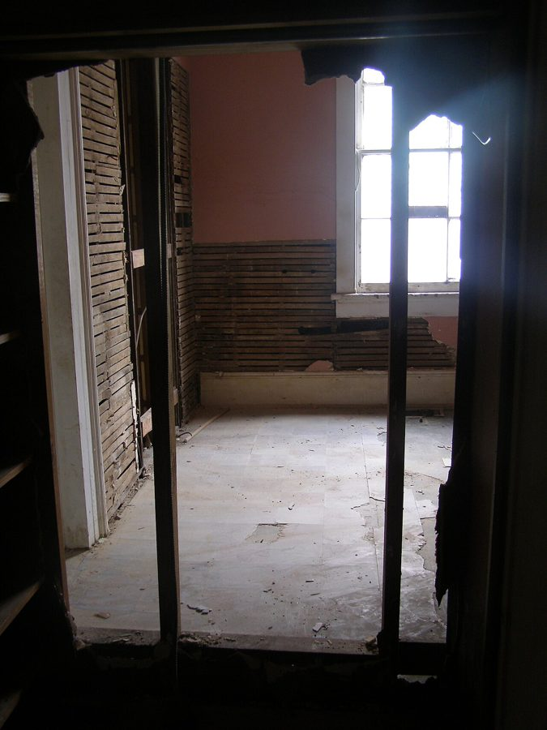
water line: none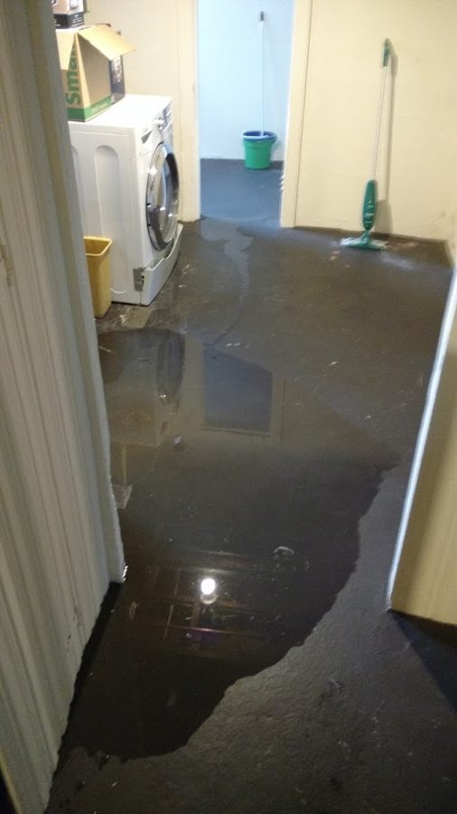
water line: none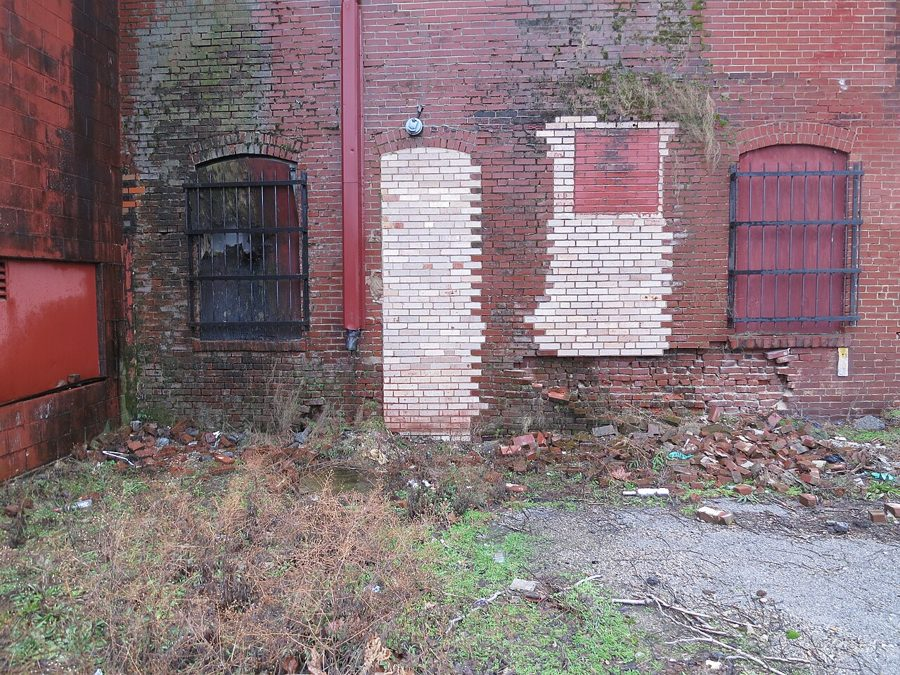
water line: noneWikimedia Commons · credits in data/public-samples/CREDITS.md
02 · Test case · 23 photos, measured ground truth
A staged water loss in my basement.
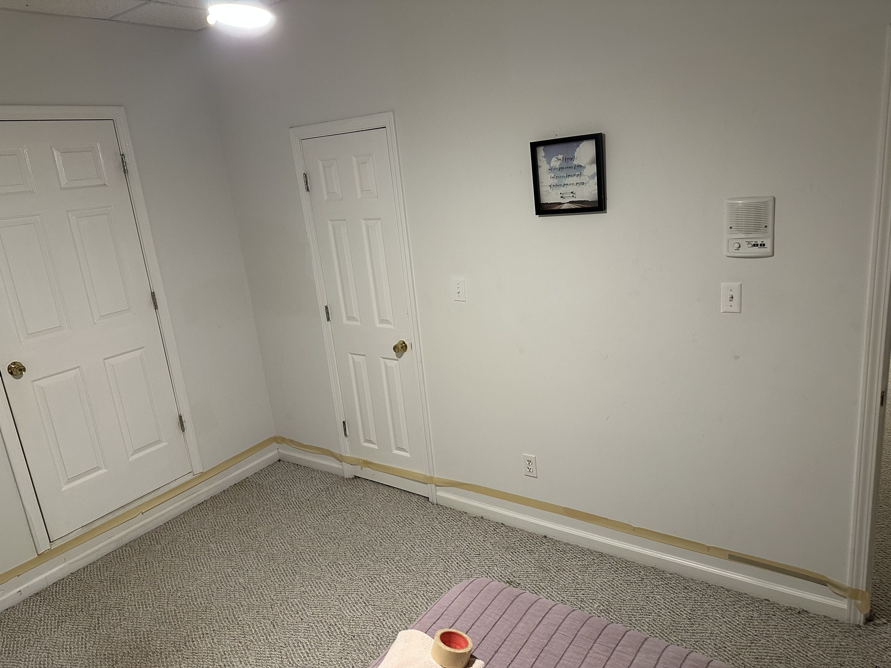
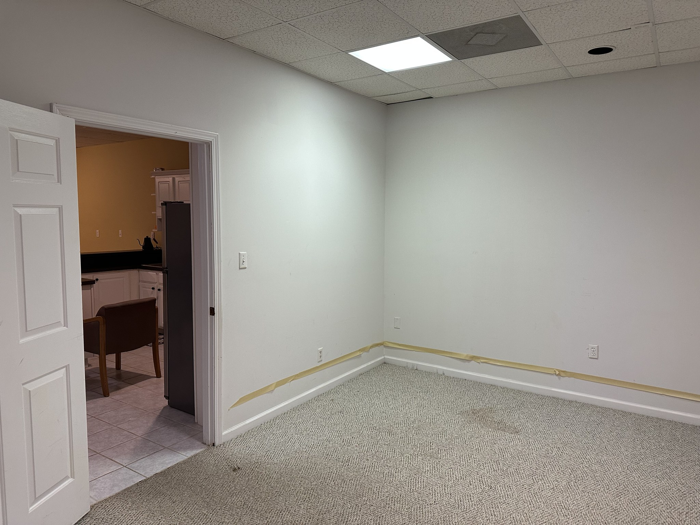
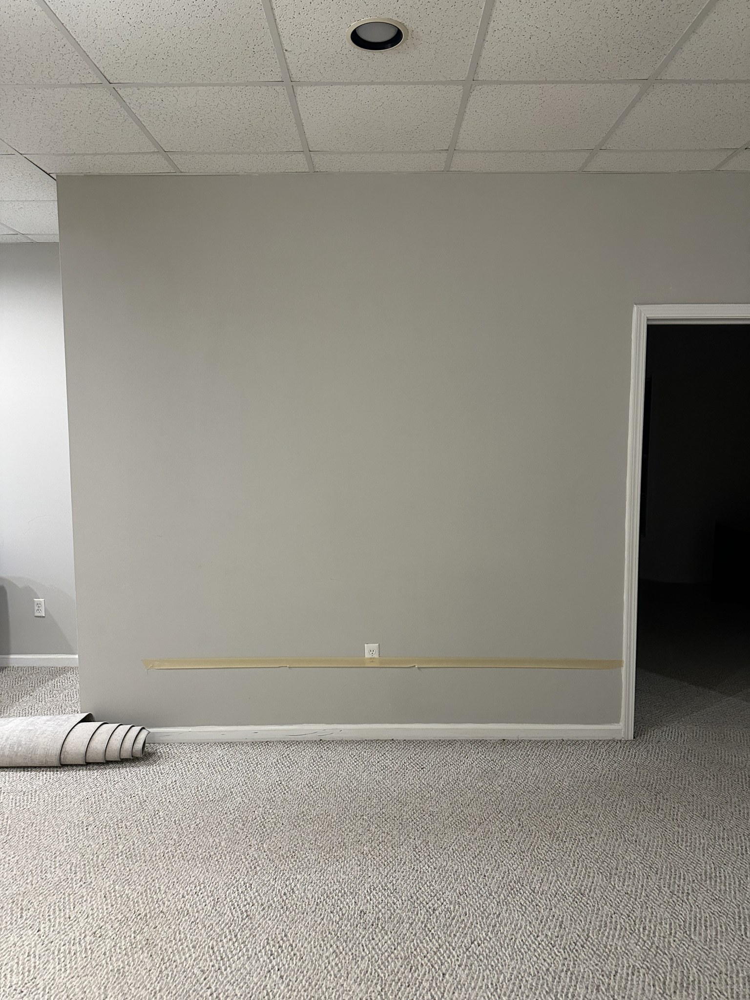
03 · Same photos, three callers
Each call hides something.
01-prepared
Prepared
“Maybe half an inch across the floor?”
should flag
- closet mentioned, never photographed
- only one wall length given
- says 'half an inch', photos show 6-16in
9/9 caught across 3 guided runs
02-vague
Vague
“I don't know where it came from.”
should flag
- water category
- bedroom: no dimensions
- den: no dimensions
- living room: no dimensions
12/12 caught across 3 guided runs
03-overclaim
Overclaims
“In the bedroom it was over a foot. Easily.”
should flag
- claimed wet, no evidence
- says 'over a foot' in the bedroom, photos show ~6in
6/6 caught across 3 guided runs
04 · Pipeline · no call sees all 40 photos
Models look. Code does the math.
1Read the callfacts, each with a quoteSonnet · 1 call
2Describe each photowalls, damage, water lineHaiku · 1 per photo
3Sort photos into roomsskipped when photos arrive taggedSonnet · 1 call
4Count wet walls per roomsees that room's photos togetherSonnet · 1 per room
5Compute the estimateflood cut, SF, equipment dayscode
6Write to Xact, read it backdiff, repair, retrycode
modelcodeguided capture removes it
gaps and contradictions → human review queue
05 · Live
One run, end to end.
$ uv run run.py data/claim-001 --transcript 03-overclaim --guided --xact-fault-rate 0.5CallerOverclaims
PhotosTagged by room
Mock Xacthalf of writes silently fail
06 · Five versions × 9 runs, scored against truth
Photos sorted into the right room
all callers (median)overclaiming caller
100%
50%
39%
39%
v1Haiku groups all photos
87%
43%
v2Sonnet groups all photos
70%
48%
v3sort rooms, then walls per room
91%
35%
v4+ caller's room descriptions
100%
100%
v5photos tagged by room
07 · v5 guided capture · 9 runs
Right every time it had evidence.
27/27flood-cut heights right
27/27review flags caught
9/9Xact read-backs verified, 13 silent write failures repaired
$0.08per claim, all model calls
08 · v5 guided capture · still open
Counting walls: the L-shaped den is still open.
Bedroomtrue: 2
7/9
Den · L-shapedtrue: 2
1/9
Living Roomtrue: 1
9/9
012345
correctwrongtrue count
09 · Concept · guided capture app
Own the capture.
Which room?Room 2 of 3 · from the call
Bedroom ✓DenLiving room+ Other
Start den
Wet wall 1 of ?Whole wall in frame
Next wall
Water lineTape measure at the line
10 in ✓ → 2 ft flood cut
Looks right
Scan the roomLiDAR · walk the edge
265 SF · wet 14.2 + 11.0 ft
Send
Tech checklistFrom the review queue
☐ Bedroom closet: moisture
☐ Den: confirm 2 wet walls
☐ Living room: area
☐ Water category
☐ Den: confirm 2 wet walls
☐ Living room: area
☐ Water category
Start visit
room tag
one step per wall
±0.5 in
lengths, area
what's left
10 · What closes each gap
Capture fixes most of it. A tech closes the rest.
| The estimate needs | Call + photos | Guided capture | Then |
|---|---|---|---|
| Room for each photo | inferred · 91% | tagged | |
| Number of wet walls | over-counted | one step per wall | |
| Flood-cut height | ±2–4 in from outlets | ±0.5 in, tape | |
| Wall lengths, room area | missing | missing | LiDAR scan |
| Moisture behind walls | unknown | unknown | tech + meter |
Right wherever there's evidence.
Explicit about the rest.
WATER LINE · WATER LINE · WATER LINE · WATER LINE · WATER LINE · WATER LINE
github.com/Ozdotdotdot/xact-agent-pocOzair Khan